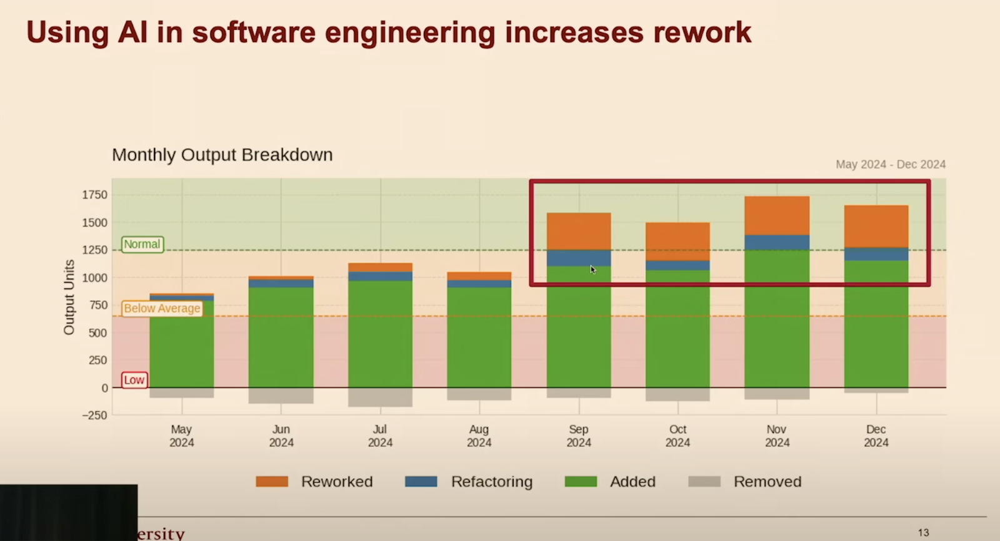
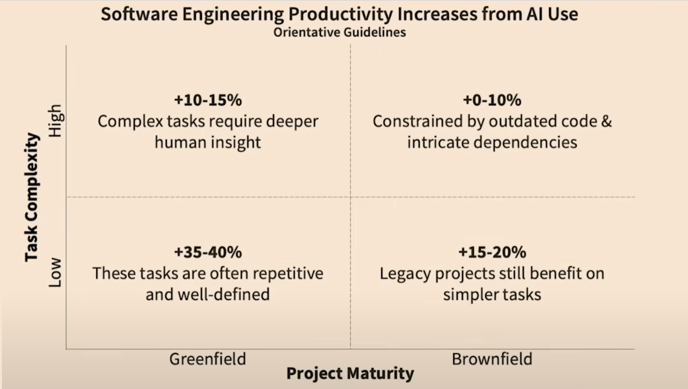
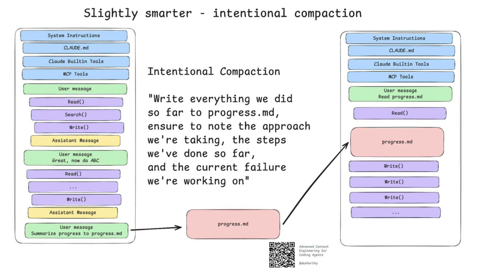
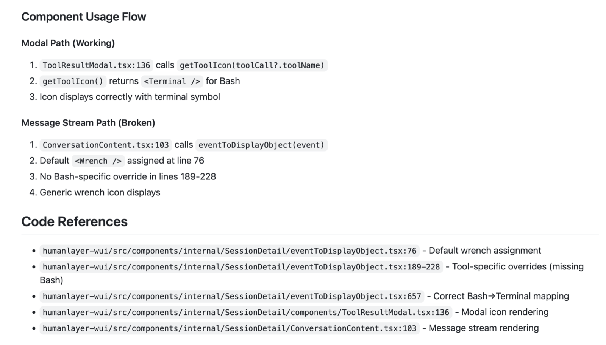
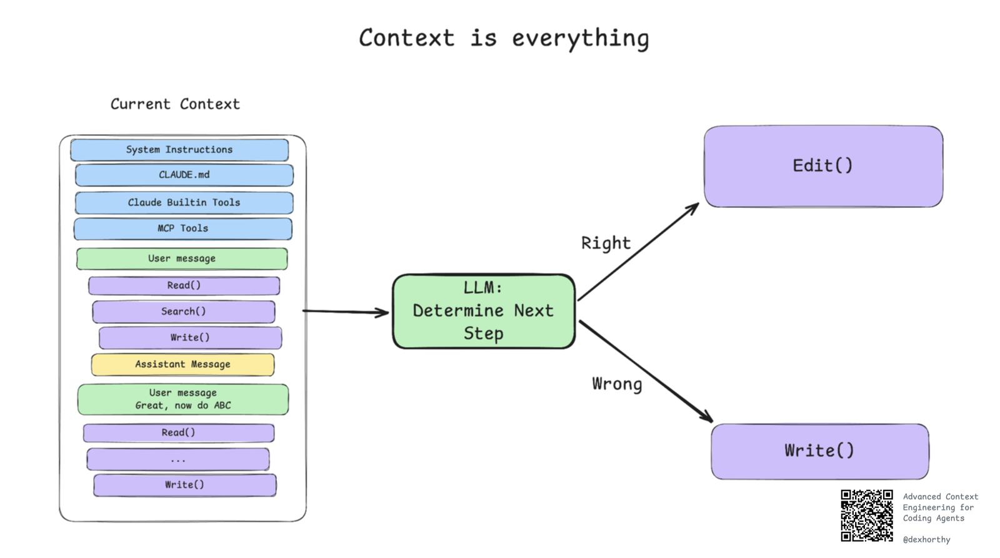
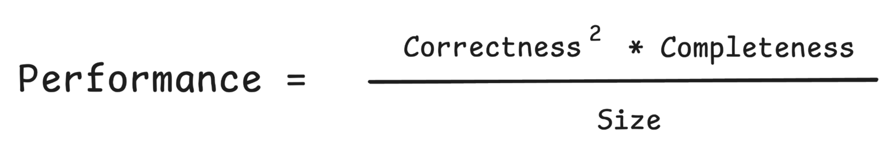
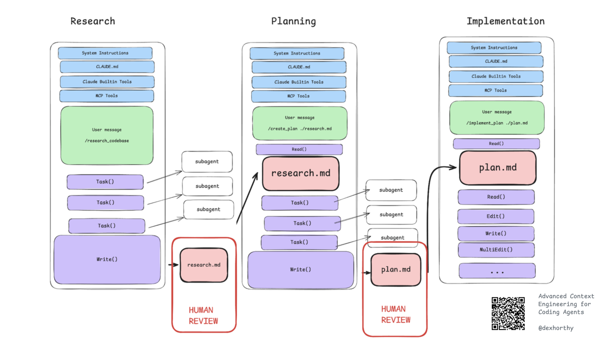
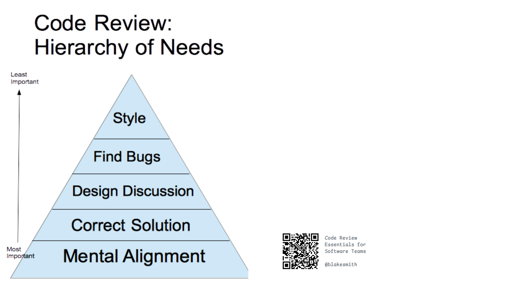

主页
主页
「AI 编码工具搞不定真实生产代码库」几乎是行业共识。作者用几个月的摸索给出反例:不必等更聪明的模型,只要把整个开发流程围绕上下文管理重新设计——保持上下文利用率在 40%–60%,在杠杆最高的位置插入人工审查——今天的模型就能在 30 万行的 Rust 代码库里修 bug、一天干完一周的活,且代码质量能通过专家评审。
文章开篇直面一个普遍接受的判断:AI 编码工具在真实生产代码库里表现挣扎。支撑这个判断的是斯坦福关于 AI 对开发者生产力影响的研究,它发现:
对此,行业的常见反应介于两个极端之间:悲观派说「这永远行不通」,温和派说「也许等模型更聪明的那天吧」。
而作者在几个月的折腾之后给出第三种回答:只要拥抱核心的上下文工程原则,今天的模型就能走得很远。
这套技术家族被作者命名为频繁有意压缩(frequent intentional compaction)——在整个开发过程中,刻意地设计「喂给 AI 什么上下文」这件事。他现在完全确信:AI 编码不只是玩具和原型的游戏,而是一门深度技术性的工程手艺(a deeply technical engineering craft)。
作者说,AI Engineer 2025 大会上的两场演讲,从根本上塑造了他对这个问题的思考。
Sean 认为我们所有人的 vibe coding 方式都错了:和 AI 聊两个小时、说清楚你要什么,然后扔掉全部提示词、只提交最终代码——这就像一个 Java 开发者编译出 JAR 包后,把编译产物签入版本库,却把源代码扔掉。
在 AI 的未来,规格(specs)才是真正的代码。Sean 预言:两年后你打开 Python 文件的频率,大概相当于今天你打开十六进制编辑器去读汇编的频率——对多数人来说,就是「从不」。
这项研究分析了 10 万名开发者的提交记录,发现:① AI 工具常导致大量返工,让感知到的生产力增益大打折扣;② AI 工具在绿地(greenfield,全新)项目里表现好,但在棕地(brownfield,存量)代码库和复杂任务上常常适得其反。


这和作者跟创业者们聊天听到的声音完全一致:
对「用 AI 干难活」这件事,大家的普遍情绪就是一句:「也许等模型更聪明的那天吧……」。作者还举了个例子:就连 Replit 的 Amjad,9 个月前在 Lenny 的播客上也在讲「PM 用 Replit agent 做原型,然后交给工程师去实现生产版本」。(作者自注:他最近没跟 Amjad 聊过——好吧,从来没聊过——这个立场可能已经变了。)
为了证明这不是纸上谈兵,作者先抛出一个具体例子(后文详述):几周前,他决定在 BAML——一个 30 万行 Rust 代码的 LLM 编程语言项目——上测试自家技术。要知道,作者顶多算 Rust 业余选手,而且此前从未碰过 BAML 代码库。
那 3.5 万行代码是与 @hellovai 结对完成的,添加的是取消支持(cancellation)和 WASM 编译两个特性——BAML 团队估计每个都要一位资深工程师干 3–5 天。
这一切围绕的就是频繁有意压缩工作流:把整个开发过程设计成围绕上下文管理来转,把上下文利用率保持在 40%–60% 区间,并在恰当的位置内建高杠杆的人工审查。他们用的是「研究、计划、实现」三步工作流,但作者强调:这里的核心能力和经验教训,远比任何具体工作流或提示词模板更通用。
这套方法的起点,是一个真实的团队困境。作者当时正与他见过的最高产的 AI 编码者之一共事:此人每隔几天就甩出一个 2000 行的 Go PR。而且这不是什么 Next.js 应用或 CRUD API,而是复杂、易发竞态的系统级代码:在 Unix socket 上跑 JSON RPC、管理 fork 出来的 Unix 进程的流式 stdio(大部分是 Claude Code SDK 进程)。
每隔几天仔细读完 2000 行复杂 Go 代码?根本不可持续。作者说自己当时的心情,有点像 Mitchell Hashimoto 给 ghostty 加上「AI 贡献必须披露」规则时的状态。
他们的解法,是采纳类似 Sean 说的规格驱动开发(spec-driven development):
然后就起飞了:几周前作者一天交付了 6 个 PR;过去三个月里,他手动编辑非 Markdown 文件的次数一只手数得过来。
大多数人一开始把编码智能体当聊天机器人用:跟它来回说话(或者像 Geoff Huntley 说的,「醉醺醺地朝它嚷嚷」),凭感觉推进,直到:上下文用光、你放弃,或者智能体开始道歉。
聪明一点的做法:发现跑偏就丢弃会话、重开一个,在新提示里多给点方向修正,比如:
[原来的提示], 但务必使用 XYZ 方案,因为 ABC 方案行不通
你可能已经做过作者称为有意压缩的事:不管当前跑没跑偏,当上下文开始填满时,主动暂停工作,把状态写进文件,然后带着一个新鲜的上下文窗口重来。常用的提示长这样:
"把我们目前做的一切写进 progress.md,务必写明: 最终目标、我们采取的方案、已完成的步骤、 以及当前正在处理的失败问题"

什么东西在吃掉上下文?
这些都会淹没上下文窗口。压缩(compaction),就是把它们蒸馏成结构化的工件(structured artifacts)。

正如作者在 12-factor agents 里深入讲过的:LLM 是无状态函数。在不训练/微调模型本身的前提下,唯一影响输出质量的,就是输入的质量。
这条规律对「驾驭」编码智能体和设计通用智能体同样成立——只是问题空间更小:我们讨论的不是「构建」智能体,而是「使用」智能体。在任意时刻,Claude Code 这类智能体的一轮(turn)就是一次无状态函数调用:上下文窗口进,下一步动作出。

也就是说,上下文窗口里装了什么,是你影响输出质量的唯一抓手。所以,是的,值得为它痴迷。

Geoff 对这个工程约束的解法,是他称为 「Ralph Wiggum 当软件工程师」的技术:用一个简单提示词,把智能体丢进 while 死循环里跑:
while :; do cat PROMPT.md | npx --yes @sourcegraph/amp done
想深入了解 ralph 或 PROMPT.md 里写什么,可以读 Geoff 的文章,或看作者与 @simonfarshid、@lantos1618、@AVGVSTVS96 在上周末 YC Agents 黑客松上做的项目——它(基本上)一夜之间把 BrowserUse 移植成了 TypeScript。
Geoff 自己形容 ralph 是个「蠢得好笑」(hilariously dumb)的方案;作者却不太确定它真的蠢。
子代理是另一种管理上下文的方式。通用子代理(即非自定义的那种)从早期起就是 Claude Code 和许多编码 CLI 的标配功能。
最常见、最直接的用法:让子代理用一个全新的上下文窗口去做查找、搜索、总结类工作,这样父代理拿到干净的结论就能直接开干,自己的上下文窗口不会被一堆 Glob / Grep / Read 调用弄脏。
理想的子代理回复,长得和上一节「理想的临时压缩产出」差不多。但作者提醒:让子代理稳定返回这种高质量结论,并不简单。
把父代理想成主刀医生:他不该亲自跑遍全院翻病历柜(那会耗尽他的精力=上下文)。他派助手(子代理)去查,助手翻完 200 份病历后只带回一页纸的摘要。医生的「工作记忆」始终干净,手术台上只放最相关的信息。(这是帮助理解的类比,非原文原话。)
作者过去几个月采用并想重点介绍的技术,统称频繁有意压缩(Frequent Intentional Compaction)。本质就一句话:把你的整个工作流围绕上下文管理来设计,并把上下文利用率保持在 40%–60% 区间(具体取决于问题复杂度)。
他们的做法是拆成「三步(左右)」——说「左右」,是因为有时会跳过研究直接进计划,有时又会在动手实现前做多轮压缩过的研究:
理解代码库、与问题相关的文件、信息如何流动,可能还有问题的潜在成因。他们的研究提示词目前使用自定义子代理;作者在其他仓库用的是更通用的版本——用 Claude Code 的 Task() 工具配 general-agent,效果几乎一样好。
列出解决问题的确切步骤:要改哪些文件、怎么改,并对每个阶段的测试/验证步骤写得极其精确。这是他们的计划提示词。
按计划逐阶段推进。对复杂工作,作者常在每个实现阶段验证通过后,把当前状态压缩回原计划文件里。这是他们的实现提示词。顺带一提:如果你常听人说 git worktree——只有实现这一步需要在 worktree 里做,其余步骤他们都直接在 main 上进行。
这些 Markdown 文件怎么在团队内管理/共享?作者为篇幅计跳过了这部分,但留了个彩蛋:在 humanlayer/humanlayer 仓库里开个 Claude 会话,问问「thoughts tool」是怎么工作的。
作者每周和 @vaibhav 做一期直播编码节目,在白板上推演并写码解决一个高级 AI 工程问题——作者称之为每周的高光时刻。几周前,他决定公开更多幕后过程:看看自家技术能否「一发入魂」地修掉 BAML(30 万行 Rust)里的一个 bug。他从 BoundaryML 仓库挑了一个(诚然偏小的)bug 开工。再强调一次:作者顶多是 Rust 业余选手,且从未接触过 BAML 代码库。(完整过程可看节目回放。)
也「能用」——修法可行,但修的位置和测试方式与代码库惯例脱节。
在最佳位置修掉了问题,并且开出的测试方案符合该代码库的既有惯例。
两份计划都不长,但差异显著:它们用不同方式修复问题、测试思路也不同。作者的结论:两个「都能工作」,但研究版明显更优。
这一切发生在播客录制的前一夜。作者并行跑了两份计划,睡前把两个 PR 都提交了。第二天早上 10 点(太平洋时间)开播时,基于研究的那个 PR 已经被维护者 @aaron 批准——而 @aaron 根本不知道这是为播客做的一次「表演」🙂。另一个 PR 被关掉了。
Vaibhav 仍然心存怀疑,作者也想验证能否解决更复杂的问题。于是几周后,两人花了 7 个小时(3 小时做研究/计划,4 小时做实现),给 BAML 交付了 3.5 万行代码,添加了「取消支持」和「WASM 支持」两个特性。
✅ 于是第二个目标也打勾了:复杂问题,也能解。
还记得例子里「作者读完研究文档发现是错的、直接扔掉重来」那段吗?还有他和 Vaibhav 连续 7 小时深度投入?作者把话挑明:
通过研究/计划/实现来做频繁有意压缩,会让智能体表现更好;但让它好到能扛硬仗的,是你在流水线里内建的高杠杆人工审查。
几周前,作者和 @blakesmith 坐下来花了 7 小时,尝试把 Hadoop 依赖从 parquet-java 里移除——过程中一切出错细节和成因猜想,作者留待另写一篇,总之一句话:这次没搞成。
如果整篇文章只记住一件事,作者希望是这个:
审研究、审计划,比审代码能拿到更高的杠杆。(顺带一提:作者所在的 HumanLayer 的主要方向之一,就是帮团队构建高质量工作流提示词,并为 AI 生成的代码与规格设计出色的协作流程。)

人们对 code review 的目的看法不一。作者偏爱 Blake Smith 在《Code Review Essentials for Software Teams》里的定位:code review 最重要的作用是心智对齐(mental alignment)——让团队成员对「代码正在如何变化、为什么变化」保持同步。

回到那些 2000 行的 Go PR:作者当然关心它们是否正确、设计是否好,但团队内部不安和挫败感的最大来源,是心智对齐的缺失——「我开始搞不清我们的产品是什么、它是怎么工作的了。」作者相信,任何和高产 AI 编码者共事过的人,都体会过这种感觉。
这其实是研究/计划/实现三件套里对他们最重要的部分:所有人产出的代码都暴涨的必然副作用,是任意时刻,代码库中「任何一位工程师不熟悉的部分」的占比都会大幅上升。
为了不让你觉得他只是「又一个打了鸡血的小胡子销售」,作者主动列出不完美之处:
作者相当确信:编码智能体将被商品化(commoditized)。真正难的,是团队与工作流的转型——在一个 AI 写掉 99% 代码的世界里,关于协作的一切都会改变。他的立场很强硬:这件事你不想清楚,就会被想清楚了的人套圈。
(作者原话如此。)他们非常看好规格优先(spec-first)的智能体工作流,正在为此造工具。作者本人痴迷的问题是:如何让「频繁有意压缩」工作流在大型团队中协作化、规模化。当天他们发布了 CodeLayer 私测版——一个「后 IDE 时代的 IDE」,可以理解为「Claude Code 版的 Superhuman」。如果你是 Superhuman 和/或 vim 模式的粉丝,准备超越 vibe coding、认真用智能体做工程,可以去 humanlayer.dev 排队。
🙏 致谢(原文):感谢听过本文早期絮叨版本的朋友与创业者们——Adam、Josh、Andrew 以及许许多多人;感谢 Sundeep 陪伴度过这场疯狂风暴;感谢 Allison、Geoff 和 Gerred 把我们连拖带拽地拉进未来。
上下文窗口是你影响 AI 输出质量的唯一杠杆;把整个开发流程设计成「频繁有意压缩」——研究、计划、实现,层层交接结构化工件——并把人类的审查压在研究与计划这两个错误放大倍数最高的关口上。AI 编码不是魔法,是一门需要深度投入的工程手艺。
{kind=link}